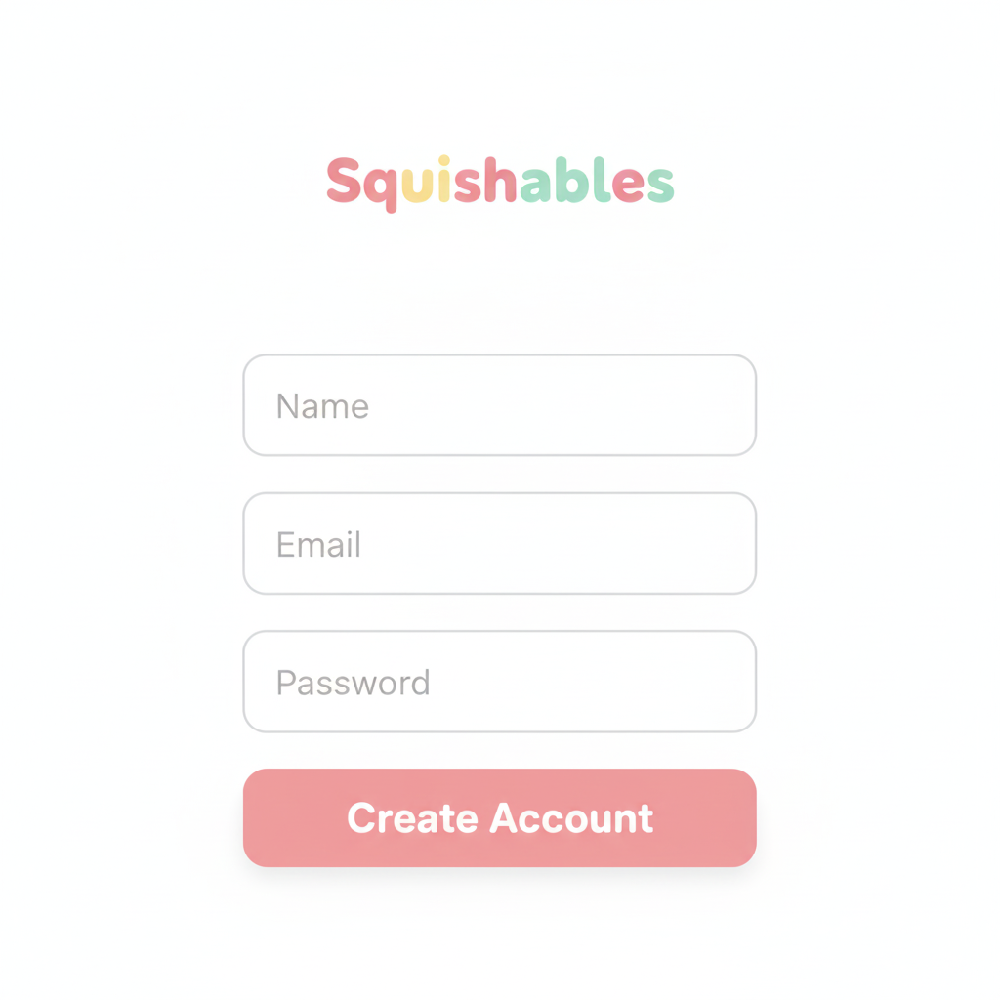
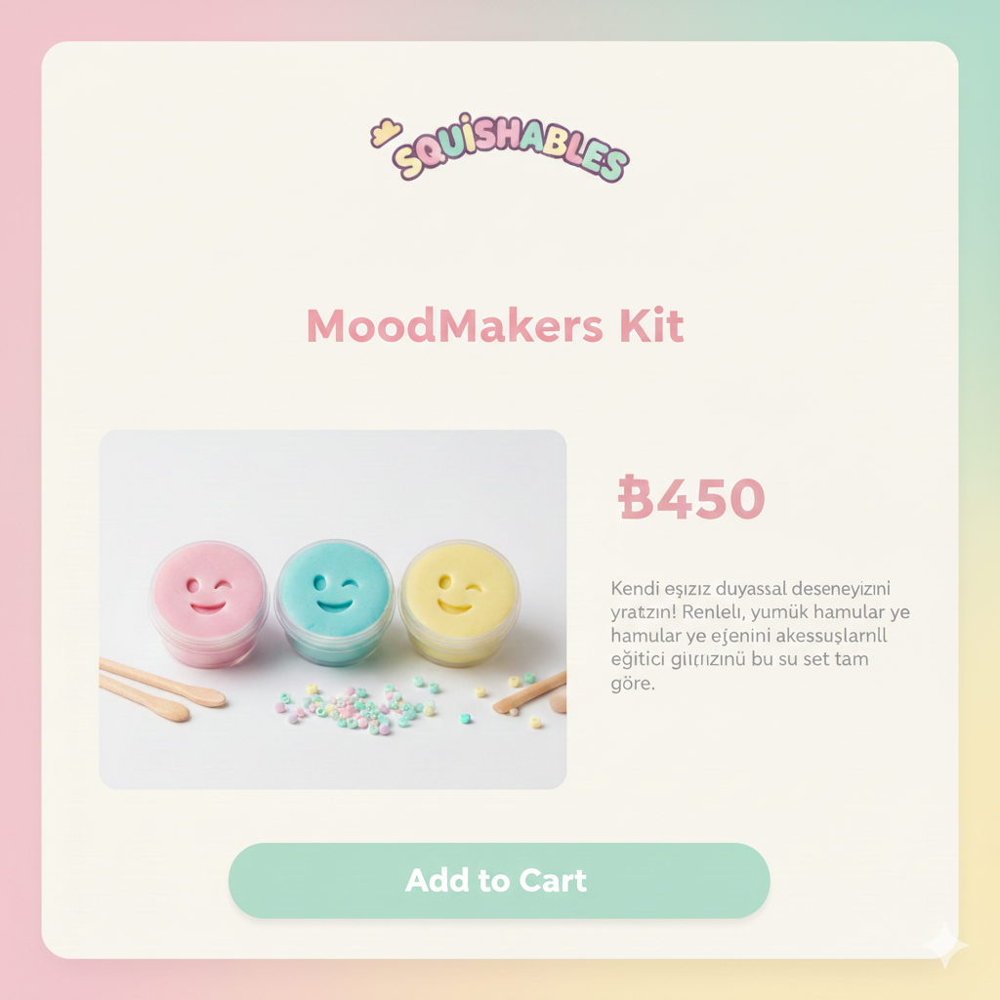
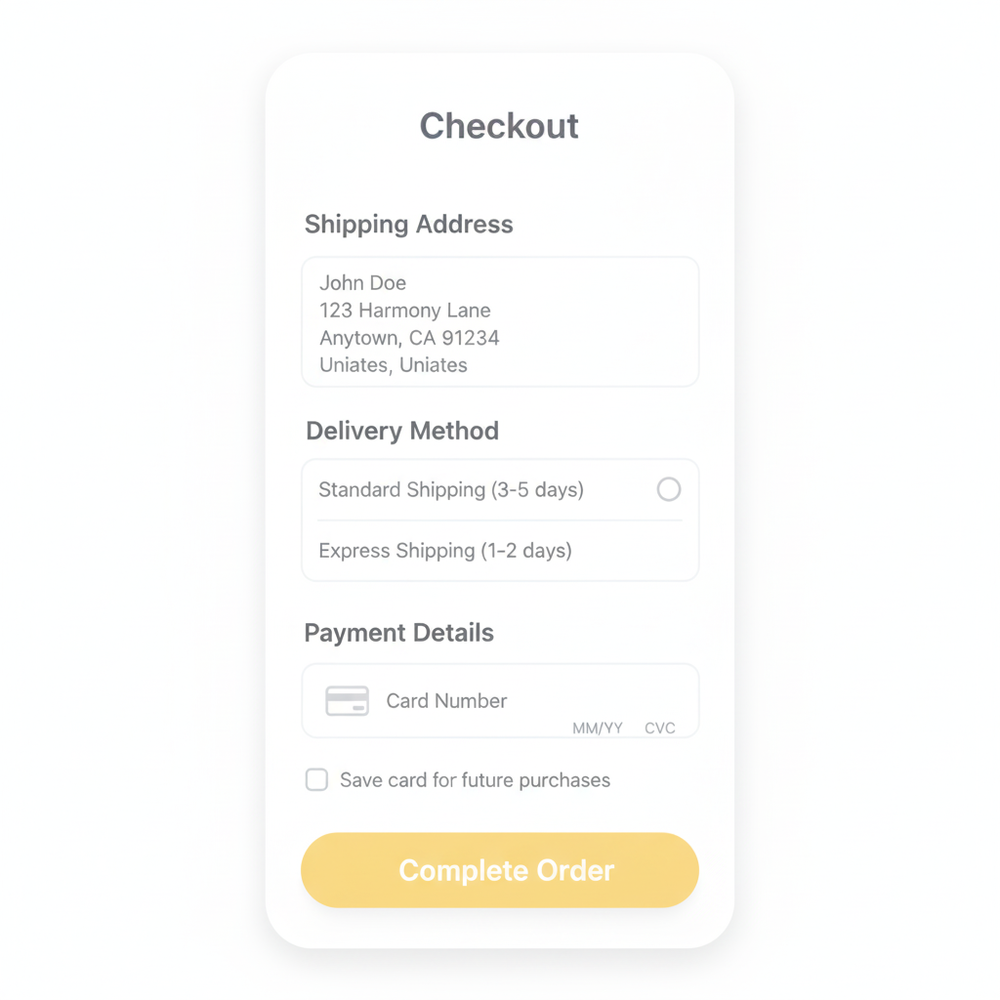

Hands On, Screens Off.
Doğal Duyusal Oyun ile Yaratıcılığı Ateşleyin.
Soft as a Hug, Kind to the Earth! [cite: 10]
MoodMakers Kiti'ni KeşfetMoodMakers Family Bonding Sensory Kit
Özel olarak hazırlanmış MoodMakers kiti, sanatsal terapi ve duyusal oyunu birleştirerek ailenizle her gün 30 dakika boyunca sakin ve yaratıcı ritüeller oluşturmanızı sağlar. Ürünlerimiz elinize nazik, doğaya naziktir. [cite: 23]
100% Güvenli İçerik ve Sertifikalar
Hamurumuz, %100 toksik olmayan ve kompostlanabilir gıda biyo içeriklerinden yapılmıştır. [cite: 21] Süper yavaş kurur, su ile kolayca yenilenir ve yüzeylerden temizlenmesi rahattır. [cite: 22]
- **Başlıca İçerikler:** Buğday unu, deniz tuzu, organik krem tartar, mısır nişastası, gıda gliserin ve çevre dostu kozmetik içerikler. [cite: 39, 40, 41, 42, 45, 47]
- **Sertifikalar:** CE (Avrupa Birliği sağlık ve güvenlik uyumu) [cite: 24, 25], EN 71 Güvenlik Standartlarına uygundur. [cite: 26, 27] Ayrıca bir kriz sonrası **Helal Sertifikası** da alınmıştır. [cite: 35]
Vizyonumuz, Kilit Mesajlar ve Nazan'ın Hikayesi
Vizyonumuz ve Misyonumuz
Misyonumuz, yüksek kaliteli, toksik olmayan, organik oyun hamuru üreterek her çocuğun ellerine renk, yaratıcılık ve özen getirmektir. [cite: 9] Sürdürülebilirlik ve etik üretime bağlıyız. [cite: 13]
Üç Ana Pazar Sütunu
- **Eğlence (Fun):** El becerisi deneyimiyle interaktif öğrenmeyi teşvik eder. [cite: 134]
- **Güvenlik (Safety):** Toksik olmayan, çocuk dostu malzemelerle üretilmiştir. [cite: 135, 136]
- **Yaratıcılık (Creativity):** Çocuklarda yaratıcı oyunu teşvik eder. [cite: 137, 138]
Kurucumuz Nazan'ın Hikayesi
Nazan Küçük, 4 çocuk annesi ve bir ilkokul öğretmeni olarak öğrencileri için daha sağlıklı hamur alternatifleri üzerinde çalışmaya başladı. [cite: 59] 10 yıl boyunca tarifini mükemmelleştirdi. [cite: 60] Farklı kokular kullanarak sınıfa aromatik bir alan yarattığını keşfetti. [cite: 65]
Nazan, hamurunu duygusal patlama anlarında bir **başa çıkma stratejisi** olarak bile kullandı. [cite: 76] Hamurun neşeli kokularla (muz, bubblegum) zenginleştirilmesi, çocukların duyularını, duygularını ve hafızalarını uyarır. [cite: 74]
Pazarlama Kampanyası Hedefleri
- Sosyal medya etkileşiminde %40 artış.
- \#HandsOnScreensOff etiketiyle 10.000+ UGC (Kullanıcı Tarafından Oluşturulan İçerik) gönderisi.
- Uygulama kullanıcılarında %20 büyüme.
- Influencer hikaye anlatımı videosunun 1 milyon+ görüntülenmeye ulaşması.
Squishables Mobil Uygulaması: Ekran Dışında Bağlı Kalın
Uygulamamız, çocukların aktif, ekran dışı ve yaratıcı oyunlara katılımını teşvik ederek marka sadakati oluşturmayı amaçlar. Uygulama, uzun vadeli katılım sağlamak için web sitesi ile birlikte çalışır.
- **Günlük Ekran Dışı Meydan Okumalar:** Aileler için aktivite zamanlayıcıları ve hatırlatıcılar.
- **Ödül Takibi:** Haftalık görevler ve ödüller ile oyunlaştırılmış ekran dışı deneyimler.
- **Yarat ve Paylaş:** Çocukların kreasyonlarını uygulama üzerinden paylaşma imkanı.
SWOT Analizi, Rekabet ve İçerik Stratejisi
Güçlü Yönler (STRENGTHS)
- %100 organik ve toksik olmayan içerikler. [cite: 304]
- CE/EN71/Halal sertifikalı. [cite: 305]
- Çok yavaş kuruyan, uzun ömürlü formül. [cite: 306]
- Kompostlanabilir - sürdürülebilir marka imajı. [cite: 308]
Zayıf Yönler (WEAKNESSES)
- Yüksek fiyat. [cite: 310]
- Yeni bir marka olması. [cite: 311]
- Kimyasal içermediği için uygun olmayan ortamlarda bozulma riski. [cite: 312, 314]
Fırsatlar (OPPORTUNITIES)
- Ekran bağımlılığı, aileler için büyük bir endişe kaynağıdır. [cite: 316]
- Okulların duyusal materyallere olan talebinin artması. [cite: 317, 318]
- "Çocuklar için yavaş yaşam / farkındalık" trendi. [cite: 319]
Tehditler (THREATS)
- Ucuz ürünlerle rekabet ve aile bütçesi kısıtlamaları. [cite: 321, 323]
- **Büyük Rakip Markalar:** Playdoh, Mamma Comica, Let’s, Adel, ChildGen gibi büyük rakipler. [cite: 127, 128, 129, 130, 131]
ASMR İçeriği ve Eğitimsel Amaç (TikTok)
TikTok kanalımızdaki ASMR videoları (ürün sıkma ve yoğurma), hamurun sakinleştirici ve duyusal düzenlemeye yardımcı olma faydalarını vurgulayarak, pasif ekran kullanımını azaltmayı hedefler. Bu, dokunsal deneyimin görsel bir gösterimidir.
Etkili PR ve İşbirlikleri Planı
Kampanyamız Aslı Enver ve Psk. Aslı Afşaroğlu gibi figürleri içermektedir. Aslı Enver ile olan PR paketi akışı netleştirilmiş, Psk. Aslı Afşaroğlu'nun uzmanlığının teyit edilmesi gerektiği belirtilmiştir.
Hesap Oluşturma ve Sipariş Akışı Demo (Statik Maket)
Bu bölüm, sipariş vermenin ne kadar kolay olduğunu gösteren statik arayüz maketlerini içerir. **(Gerçek data toplamaz, sembolik bir gösterimdir.)**
Adım 1: Hesap Oluşturma / Giriş Yapma
Yeni kullanıcılar için hızlı ve minimalist hesap oluşturma formu, mevcut kullanıcılar için kolay giriş imkanı sunulur.
Adım 2: Ürün Sepetine Ekleme
Kullanıcı, MoodMakers Kit ürün sayfasından ürünü tek tıkla sepetine ekler. Kampanya fiyatları net olarak gösterilir.
Adım 3: Ödeme Sayfası (Mockup)
Adres ve ödeme bilgileri temiz bir arayüzde doldurulur. Tüm süreç tek sayfada tamamlanarak ödeme deneyimi optimize edilir.